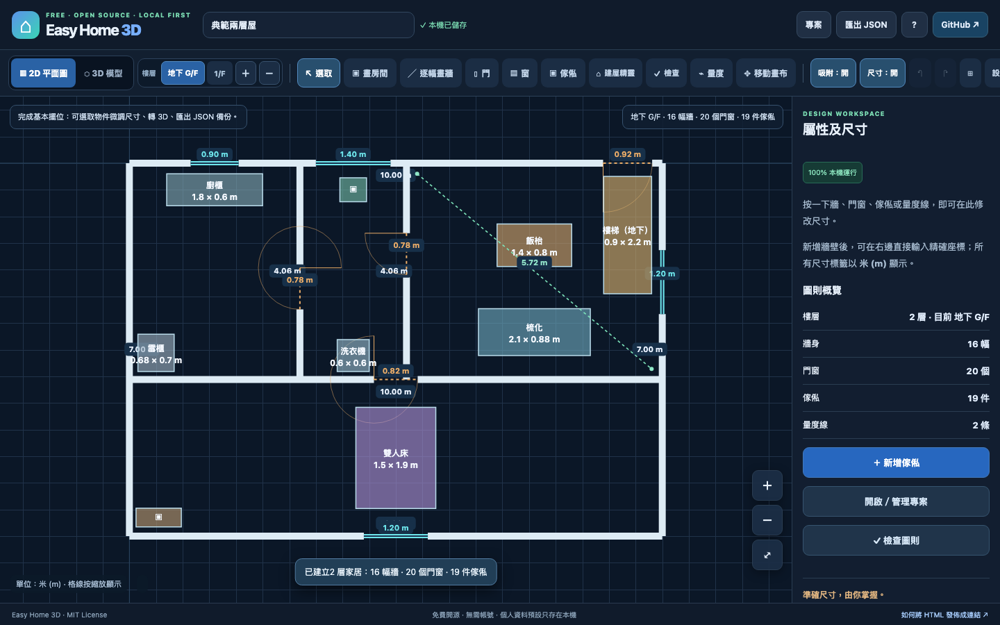
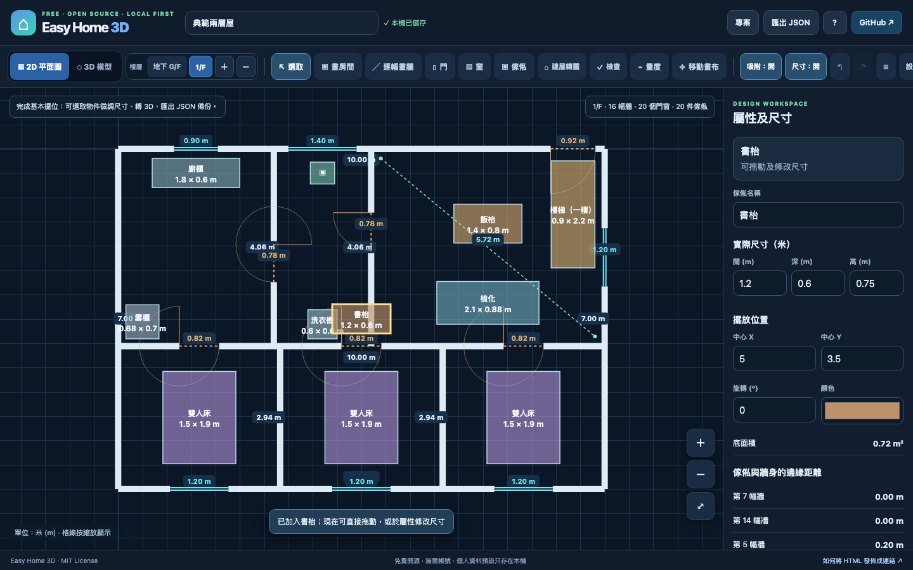
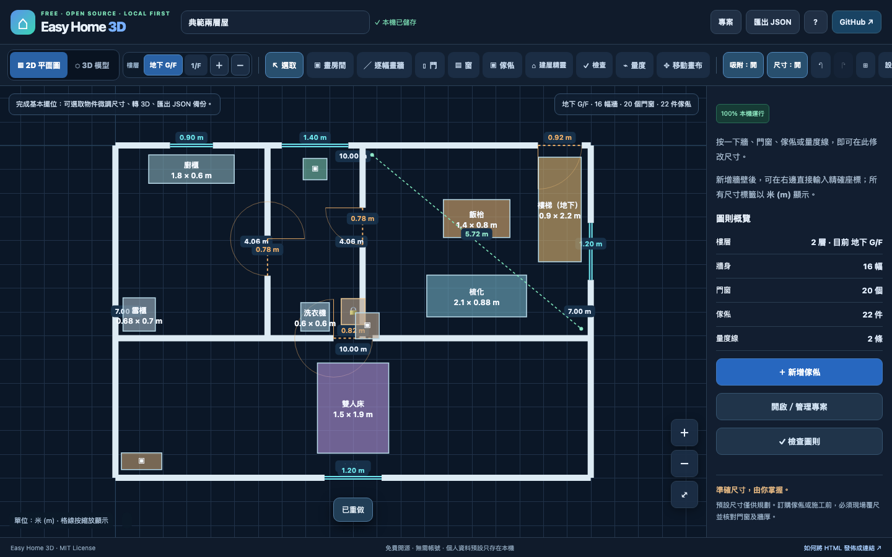
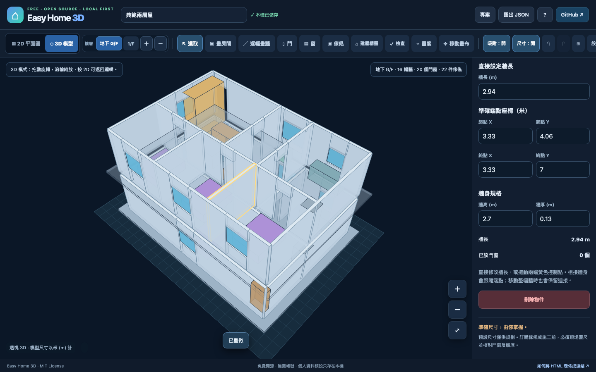
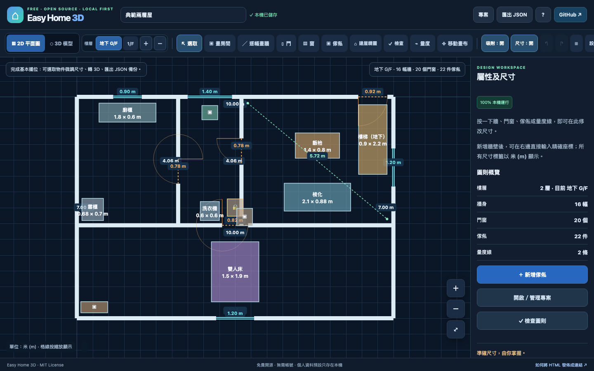

Easy Home 3D · 兩層屋端到端驗證
由空白圖則開始，用建屋精靈建立 2 層、每層 7/9 幅牆嘅完整屋，逐層放傢俬，再驗證 3D、備份、加層／刪層。
2樓層
16總牆數
20總門窗
19總傢俬
3 m層高
圖則檢查：✓ 圖則檢查通過 沒有發現門窗重疊、超出牆身、牆身斷開或傢俬碰撞。此檢查只作規劃輔助，不取代現場覆尺及專業結構評估。
功能驗證
- 地下 7 幅牆／8 個門窗／9 件傢俬；一樓 9／12／10。
- 一樓新增 書枱 @ floor 1；地下新增 椅子 @ floor 0，改闊至 0.55 m、旋轉 1.5707963 rad，鎖定 成功。
- 複製後 Undo／Redo：22 件傢俬；3D 兩層堆疊正常。
- JSON 匯出／匯入／reload 後仍有 2 層、3 個專案。
- 加層 → 3 層，刪頂層 → 2 層。瀏覽器 JavaScript 錯誤：零。
操作截圖




